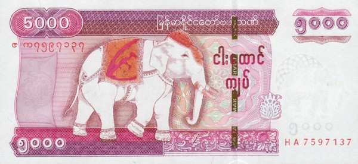
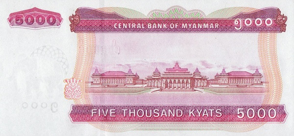

🧐 What are the signs of a counterfeit 5,000 Kyat note? The counterfeit 5,000 Kyat note can be easily distinguished just by looking at it. The color is noticeably different. The counterfeit note tends to be more pinkish in tone. Here's a rough guide to identifying it: • The counterfeit note has cut marks on the paper corners. (The genuine note does not have these.) • The watermark in the center-left corner of the note is missing in the counterfeit. (It is present in the genuine note.) • The counterfeit note does not have the denomination or "MYANMAR Spw" text on the security thread. (It is present in the genuine note.) • The watermark with an image of a bull in the right-center corner is missing in the counterfeit. (The genuine note includes it.) • The bull image watermark can be viewed by holding the note up to light, and in newer versions of genuine notes, it flips when held at different angles. The 1,000 Kyat counterfeit note, on the other hand, has a noticeable difference in the paper quality as well.
 